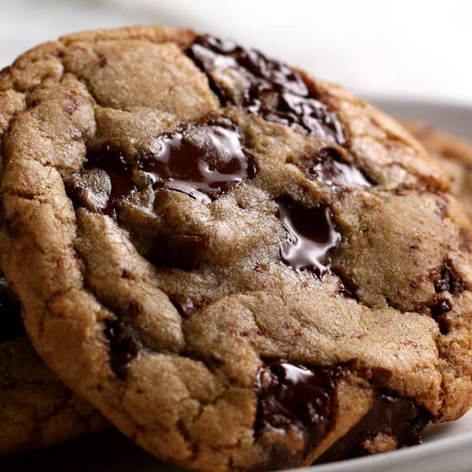

There are a few secrets to the best classic, chewy chocolate chip cookies. Number one: Don’t use chips; instead, opt for a mix of milk or semisweet and dark chocolate chunks. The second is to let the dough rest overnight or longer for a more complex, toffee-like flavor. Lastly, use an ice cream scooper to get even-sized cookies every time. And that’s it! With these little tweaks, the result is a cookie that’s textured on the outside, and soft and gooey on the inside. Absolutely perfect!
Cook Time: 15 minutes
Prep Time: 20 minutes
Total Time: 1 hr 5 min